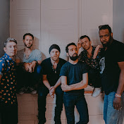

Contributing to Open Source Part I: The Easy Way

The Odin Project
938 subscribers
How do you contribute to open source? In this video, I'll describe the easiest way to make a simple contribution to an open source project -- without using the command line, a text editor, "forking a repo", or even touching Git outside of Github. I'll also describe what kinds of contributions open source software projects are typically looking for. As an example, I use submitting a student solution to a web development exercise from The Odin Project, a free online curriculum for learning web development with Ruby on Rails. You can find more information about that project at http://theodinproject.com.
SHOW MORE

An actual unnamed commenter
1 year ago (edited)
A remark to what happening at 04:12 is: after clicking "Propose file change", it now goes to commit page instead of the pull request screen as shown on the video. One need to click the commit name (e.g. patch-1 if it is the first commit of your branch) near the top of the screen to go to the pull request screen.
Read more

Kindo
1 year ago
Kindo, formerly 'The Reign of Kindo', didn't actually respond to this video. But they're a great band. Check them out here!
ArtosisTV
2 year ago
Artosis didn't comment here either. Weird. As it happens, I didn't want to use real people's accounts, excepting my own.
The Hill
2 year ago
I'm listening to The Hill's Rising while typing this, making it an easy example. If you're into populist politics, or just want to hear a perspective ignored on the big channels, Krystal and Saagar are a good choice.
Aimee Nolte Music
3 year ago
Interested in jazz piano? Aimee Nolte is great. She has a bunch of videos to teach jazz piano concepts. She's super good and also super humble. What more could you want?